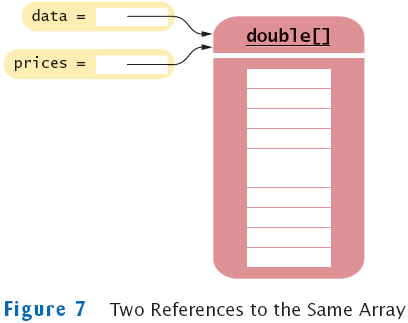

previous
|
start
|
next
Copying Arrays: Copying Array References
Copying an array variable yields a second reference to the same array
double[] data = new double[10];
// fill array . . .
double[] prices = data;

previous
|
start
|
next